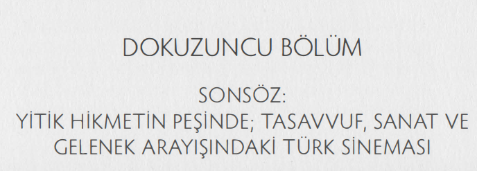
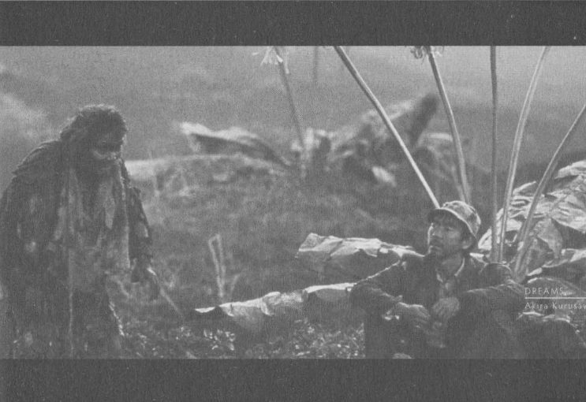
Bir medeniyet/kültür toprağında geliştirilmiş bir biçim, bize, medeniyet/ film sanatı ilişkisinin nasıl kurulabileceği üzerine derin bir fikirler antolojisi sunsa da, kendi medeniyetimiz ve sanatımız üzerinden bir film biçimi geliştirmek, öncelikle medeniyetimizin temel ilkelerini tespit etmekten geçiyor.
''Allah, göklerin ve yerin nurudur. O'nun nurunun temsili, içinde lamba bulunan bir kandillik gibidir. O lamba kristal bir fanus içindedir; o fanus da sanki inciye benzer bir yıldız gibidir ki, doğuya da, batı ya da nisbet edilemeyen mübarek bir ağaçtan, yani zeytinden (çıkan yağdan) tutuşturulur. Onun yağı, neredeyse, kendisine ateş değmese dahi ışık verir. (Bu,) nur üstüne nurdur. Allah dilediği kimseyi nuruna eriştirir. Allah insanlara (işte böyle) temsiller getirir. Allah her şeyi bilir'.'
(Nar 35)
İnsan Neyi Kaybetti?
İNSANIN HAKİKİ ÖZGÜRLÜGÜNDEN BAHSEDERKEN, onun özgürlüğünün, Allah ile bağlantısı nispetinde değerlendiğinin farkına varmamız gerekiyor.
Peki, özgürlüğün, özellikle modern-liberal anlaşılma biçimlerinin insanın hakiki özgürlük inşasıyla ne kadar ilgisi olabilir?
İnsanın neyi kaybettiğinin anlaşılması, işte bu "özgürlük" meselesinin nasıl ters-yüz edildiğinin anlaşılması ile ilgilidir.
Modernite, insana, tarihindeki en büyük kötülüğü yaparak, onun "insanlığını" ve dolayısıyla halifeliğini oluşturan "ipleri" kesmeye çalışmış, kesemediği zaman da o ipleri görünmez kılmıştır.
İnsanı Yaratıcısına bağlayan ve dolayısıyla onu "düştüğü" bu çukurdan tekrar yükseltecek imkanları ortadan kaybetmekti bu.
Artık özgürlük, insanın toprak ucu ile Rahman ucu arasındaki gerilimden oluşan bir "yükselme" imkanı değil; insanın balçık içinde debelenme özgürlüğü haline gelecekti!
Kant gibi "sentez" filozofları, toprak ucuyla Rahman ucu arasındaki gerilimi "uzlaştırmak" için aradaki ipin tümden kesilip, her iki ucu ayrı ayrı ikame etmek gibi bir çözüme gidiyorlardı.
İnsanın "yetişkinliği" buydu artık!
Vahyin tam tersi ...
Ama bu "girişim" aradaki vahim kopuşu daha da içinden çıkılmaz hale getirmekten başka bir şey yapmı yordu.
Yetişkin olduğu söylenen insan, Allah ile -kalmışsa- bağını bir takım ritüellerin içinde kaybediyor, hayatile olan bağını ise içinde debeleneceği balçığı işgal ederek kurmaya çalışıyordu.
Nefs, insanın ruhu ile bedeni arasındaki ara birim olarak, bir yanıyla beden tarafından aşağı çekilen, öte yanıyla da ruha yükselmek isteyen bir mahiyet arz eder.
Bu yüzden, nefs-i emmare'den, nefs-i kamile'ye kadar uzun bir yolculuktur nefs.
Bir yanıyla esfel-i safilin'e bakar, öte yanı ahsen-i takvim'e yükselmek ister.
Modern düşünce, nefsin bu "yapısını" bozunuma uğratmasıyla bir fıtrat katliamı olarak da değerlendirilebilir.
Artık nefs, sadece bedenle ilişkisi olan, ama ruhu unutan ya da onu bir takım psikosomatik etkilerin alanına indirgeyen ve bodrum katlarında debelenmenin özgürlük olarak kutsandığı bir şekle bürünür.
İplerin kesilmesi, nefsi kendi yolculuğunda yetim bırakır.
İnsanın balçık ucu ile Rahman ucu arasındaki bağın kopuşu, insanı bir arada tutan tüm bağların kopuşu anlamına geliyordu bir anlamıyla.
balçık ucu-----------Rahman ucu
Modernitenin, insanlık tarihindeki en büyük fıtrat katliamı olması bundandır!
Özgürlük, modern düşünce, insanın "akletme yetilerini" hadım/iğdiş etmeden önce, insanda mündemiç olan "yükselme" imkanlarının keşfedilmesinin adıydı.
Evet, bazen günah da vardı bu yolda; ama tövbe imkanları ile birlikte "günahtan kurtulma" özgürlüğü de bu günahlara eşlik ediyordu.
Aşağı çeken her ipe karşılık, yukarıya çeken çok daha güçlü bir ip görünür haldeydi.
Özgürleşme, insanın, balçığın, yani "maddi olanın" tutsağı olmaktan kurtulup, ruha yelken açmaya uğraşmasının adıydı.
Bu yüzden külfetli ve zor bir yolculuk olduğu inkar edilemezdi.
İnsanı, "görünürdeki" en "kolaya", "dar kapıya", "sarp yokuşa" değil, uçuruma giden geniş yollara mahkum eden modernite ise, insanın insan olmasını sağlayan "iplerin" salıverilmesini buyuruyordu tüm insanlığa.
İpleri salınca, "bağlarından" kurtulacak" ve "özgür" olacaktı insan!
Ancak bağlarından "kurtulması" insanı bambaşka bağların esiri yapacaktı.
Yusuf Kaplan'ın isabetle söylediği gibi, ontolojik güvenini kaybetmiş insan, epistemolojik güvenlik alanlarını çoğaltmakta bulacaktı çözümü.
… ontolojik güvenini kaybetmiş insan, epistemolojik güvenlik alanlarını çoğaltmakta bulacaktı çözümü.
Böylece insan, bataklığı "fethetmeye" koyulacaktı hızla.
Bilim ve teknolojinin tarihin hiçbir döneminde ve medeniyetinde olmadığı kadar "çarpık" gelişmesinin sebebi, epistemolojik güvenlik alanlarına duyulan trajik ihtiyaçtır.
Ama insan, "fethetmeye çalıştığı" balçığın içinde bir bataklık yaratığına dönüşüyordu hızla!
Bataklığa saplandıkça, kendini daha "özgür" olarak sunuyor ve bataklığın mahiyetini kutsar hale geliyordu.
Arzu politikaları, haz politikaları, nihilizm saplantıları ve tüm "değerlerin değersizleşmesi" çağımızın korkunç çölünün vahaları olarak kutsanır hale geliyordu. Böylece modern düşünceye bir "eleştiri" olarak doğmuş olan post-modern düşüncelerin, sorun tespitleri bazı zamanlar doğru olsa da, çözümleri modern çölün korkunçluğunu beslemekten başka bir hayat alanı üretemiyordu.
"Teslim olun; teslim olun ki yaşadığınız bataklıktan 'haz alın'.
Bu bataklıktan başka bir imkanı yok insanın!" mottosu post-modern düşüncenin ana itici gücü haline dönüşüyordu.
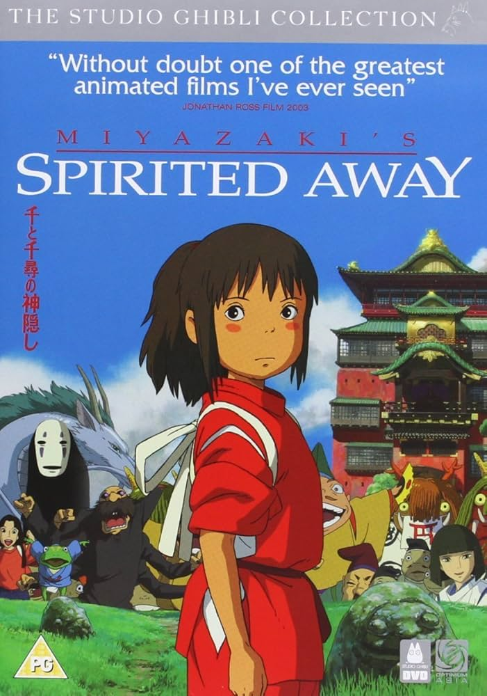
Yüzsüz, modern insanın bir sembolüdür. Devamlı yer, önüne ne geçerse yer yutar, ama bir türlü doy(a)maz. Dizginsiz nefs-i emmare, Yüzsüz'de ete kemiğe bürünmüştür. Doyamaz, çünkü durmak istese bile duramaz.
Yedikçe şişer, şiştikçe daha fazla yeme ihtiyacı duyar, aynen modern insan gibi.
Modern düşüncenin, "balçığı fethinin" sonuçlarından birisiydi, işgalcilere sonsuzca yeme hakkı verirken, mazlumu her şeyden mahrum etmesi.
Yiyor yiyor, sonra da post-modern uzmanlık alanlarının en trajikomiği olan türlü cinsten "diyetisyenlere" başvuruyordu insan.
En "makbul" diyet, yemeyi içmeyi hiç azaltmadan "gösteriş" imkanını ortadan kaybetmeyendi!
Akademi, türlü cinslerden diyetisyenliğin bir sürümü oluyordu böylece.
Sosyoloji, psikoloji, tıp, psikiyatri, felsefe...
Bunlar bilim ve teknolojilerin ürettiği "ürünleri" yiyen insanların, "diyet politikalarını" belirliyorlardı.
Her birisi, modern ve ultra-modern özgürlük politikalarının bir başka yönden "onayına" ve o onay üzerinden inşa edilen fıtratı bozulmuş hormonlu insanın "propagandasına" girişiyordu.
Ancak, nefs-i emmare'nin doymamak gibi bir özelliği vardır ve insanı kendi içinde yok edinceye kadar aynı döngü içinde döndürür.
Global bir nefs-i emmare olarak adlandırılabilecek olan bilimsel ve teknolojik "ilerleme" saplantısının, tüm dünyayı, çevre ve insanlığın geleceği açısından yok edecek raddeye gelmesi ve ortamı insan için yaşanılmaz kılan bir global uçuruma dönüştürmesi modern çarpıklıkların en trajik sonuçlarındandır.
Yeme içme şehveti, kariyer şehveti, para, mal mülk şehveti, "ilerleme" şehveti, cinsellik şehveti...
Bunların hepsinde sonsuzca açılan "özgürlük" alanları, her birinin kendi "bodrumuna" ve "sapkınlığına" düşmesiyle sonuçlanacaktı doğal olarak!
Yaratıcısı ile bağlarını koparan insan, O büyük boşluğa türlü tanrıcıklar doldurmaya başlayacaktı.
Mesleğine, egosunu, kariyerine, arabasına, siyasi partisine, evine, parasına, gücüne, iktidarına ve bunlar gibi yüzlerce başka şeye tapan bir insan modeli ortaya çıkacaktı.
Özgürlük olarak dayatılan şey, insanın bataklık içine daha da gömülme özgürlüğü olacaktı en fazla!
Ve bu bataklık özgürlüğüne karşı "hatırlatılan" bir başka "özgurlüğü", Rahman isminin tecellisiyle şereflenme özgürlüğünü, "özgürlük karşıtlığı" olarak damgalayacaktı liberal özgürlük politikaları!
"Yüzsüz" için olduğu gibi, modern insanın doymayan nefsini "ehlileştirmenin" bir yolu vardı elbette.
Kusturmak!
Yüzsüz, şişip patlamak üzereyken, kendisine bir tavsiye olarak söylenen "yediklerini kus" sözü üzerine kusar.
Yediği yuttuğu her şeyi, son damlasına kadar kusar! Kusma öncesi bitmeyen kargaşa, bozgunculuk ve telaşın esiri olan Yüzsüz, birden müthiş bir sükunet ve huzura kavuşur.
Aynen Wenders'in Palermo'da Yüzleşme filminde, kariyerini, güç ve iktidarını "kusan" adamın, çobanlıkta bulduğu huzurda olduğu gibi...
Bir ayağı balçıkta olan, ama öte yanı Rahman'a uzanan insan, özgürlüğün iki türüyle karşı karşıya kaldı tarihi boyunca.
İlki insanın, "yukarıya" çıkmak için imkanlarını seferber etme özgürlüğüydü.
insan, nefsini bedeni ile ruhunun arasındaki bir denge olarak ve ruha ulaşmak için bir binek olarak kullandığı zaman, ona bahşedilen "İlahi hediyenin" sonucu olan "hakiki özgürlüğün" de farkına varıyordu.
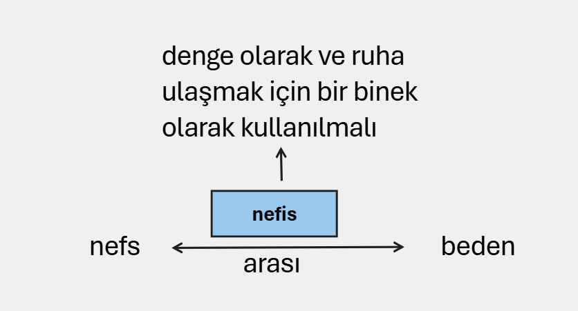
Halife olmak bu demekti!
Modernite, insanın Allah ile olan ilişkisini önce ters yüz etti, sonra da bu ilişkinin bir yanını kesip attı!
Böylece, insan, debelendiği bataklığı kutsayan bir bataklık yaratığı haline dönüştü.
"Özgürlük" bataklığı bataklık yapan şartların ilelebet payidar kalmasını mümkün kılacak şartların oluşturulma özgürlüydü artık!
İnsan istediği kadar batabilir, istediği kadar hazların tutsağı olabilirdi.
Zaten özgürlük, hazcılığın bir tezahürüydü ultra-modern zamanlarda.
"Yetişkin" olmuş insanın, yetişkinliğinin vardığı trajik durumdan kurtulmanın çözümü olarak, insanın bir "bataklık yaratığı" olduğu "bilgisinin" kabulü vardı artık!
Hazzı, şehveti olabildiğine kışkırtan politikalar, insanın "özgürlüğünün" de önünü açacaktı!
Böylece bilim, sanat, siyaset, felsefe ve politika, bu hazcılığın yedeği ve propagandisti olarak kullanılabilirdi...
Ancak hakiki düşünce ve sanat, elbette bu "çöküşün" farkındaydı ve çöküşten kurtulmanın, kimi zaman içgüdüsel geçici, kimi zaman da hakiki bir geleneğe dayanan kalıcı çözümlerini üretebilmekteydi.
???????"çöküşün" farkındamıyız ??????
Miyazaki'nin sözünü ettiğimiz filminde adeta elyordamıyla "bulduğu" şey tam da böyle bir çözüm ihtiyacının dışavurumudur!
Kayıp Hikmeti Ararken
İnsanın neyi kaybettiği sorusu, sanatta, sinemada veya hayatın bütün diğer alanlarında ne yapacağımızı derinden etkileyen sorudur.
Neyi kaybettik sorusu ne yapacağız/yapmalıyız/yapabiliriz sorusunun mukaddemidir.
Bu soruya vereceğimiz cevaplar, medeniyet yürüyüşümüzdeki başarımızı da belirleyecektir.
İnsan, tasavvufun "kesrette vahdet; vahdette kesreti" gören gözlerine bu anlamıyla muhtaçtır.
"İplerin" koparılması ya da görünmez kılınması, insanın kesret içinde boğulmasına sebep oldu.
Vahdet "kaybolunca", türlü biçimlerdeki sanatlar, "oluş" ve "kesret" ırmağında ıslanacak ve Vahdet'te kurulanmadan yeniden başka bir oluşa atlayacaktı.
Artık yeni putumuz "hakikat diye bir şeyin olmadığını" haykıran post-modern putlardı.
Modern düşüncenin ardından gelen bütün oluşçu felsefe ve sanatların temel problemi de budur.
İnsan, "Bir" ile "çok" arasındaki canlı ilişkiyi kaybetmiştir her şeyden önce.
Dolayısıyla tasavvuf sanata ne katabilir sorusuna vereceğimiz her türlü cevabın birinci kalkış noktası, bu ilişkiyi yeniden ikame etmek olacaktır.
Allah-kainat-insan ilişkisinin unutulduğu modern düşünceye hiç bir -anti düşünceye sığınmadan verilebilecek en değerli panzehirdir medeniyetimiz.
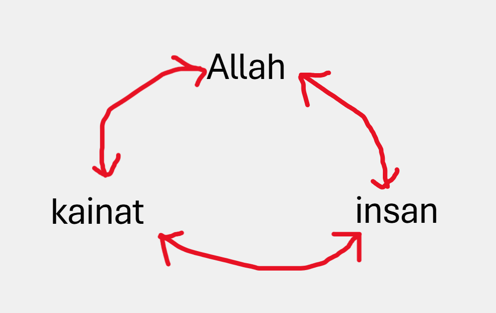
Bu medeniyet vahiyle yeşeren, tasavvufun vahyin irfanına yolculuğun taşıyıcısı olduğu bir medeniyettir.
Gelenek, işte bu kadim vahiy medeniyetinin oluşturduğu birikimin adıdır.
Bu aşamada "Gelenek nedir?" ve nasıl bir "otantiklik" üzerine inşa edilir meselesi üzerine etraflıca düşünmemiz gerekiyor.
Türkiye'de, gerek düşünce, gerekse de sanat alanlarında, Batı'nın referans olduğu bir bakış sözkonusu olageldi.
O bakış, bize "doğru" olanın "şaşmaz" ilkelerini verirken, kendi "geleneğimizden" alabileceklerimizi minimal hale getirdi.
Normalde bir düşünürya da sanatçı, birşeyler "yaratacaksa" öncelikle kendi medeniyet/kültür alanından beslenir.
Ancak, özellikle akademik düşünce veya sanat, medeniyet/kültür dairesini "başarısı tescillenmiş" en uzak daireye, yani Batı'ya kaydırır.
En yakın daireden başlaması gereken düşünür/sanatçı, kendisine en uzak olan bir geleneği "kendisi" kılmaya çalışır.
Bu, bir mezarlıktaki ölü kemiklerini, kendi mezarlığımıza aktarmak demektir.
Türkiye'de, en yakın dairelerin tümüyle görmezden gelinmesi, hatta aşağılanması bir yana, en uzak dairelerle ilişki de o coğrafyanın düşünsel birikimi göz önüne alınarak kurulmuyordu.
Zira özellikle Tanzimat sonrası gelişmelerin, en azından, dini gelenekle bağları tümüyle koparamasa da oldukça zayıflattığı bir vakıadır.
Felsefe denince çoğunlukla Rönesans sonrasındaki Batı düşüncesiyle, o düşüncenin Roma ve "dönebildiği kadarıyla" Yunan düşüncesini ele alış tarzlarının kastedildiği, sanat denince de hep bir "akım" olarak Batı sanatının ele alındığı da ayrı bir vakıadır...
Recep Alpyağıl'ın Türkiye'de Bir Felsefe Gelenek-i Kurmak kitabında isabetle tartıştığı gibi, gelenek, dönülecek biryer, ya da, olduğu gibi geçmişten bugüne taşınacak bir "hazır reçete" değil; daha çok her döndürüldüğünde farklı bir yolu görünür kılacak bir köktür.
O köke nasıl ulaşacağımızı bilmek ve o kök ile gövdeyi nasıl buluşturacağımızı anlamak, gelenek kurmak meselesinin hayati önceliğidir.
Formlar, normlar, kavramlar -ya da düşünce, sanat ve felsefenin başka tür Formları- yaşayan şeylerdir.
Yaşamaları için üzerinde yetişip büyüdükleri toprağa bağlı köklerin sağlam olması gerekir.
Kavramları ya da düşünmenin diğer formlarını bir tür postacılık ile alıp, bambaşka bir kültürel, dini, toplumsal ortamda hiçbir müdahale yapmadan yaşatmaya çalışırsanız o şeyin yaşama imkanını azaltmakla kalmaz, yaşayabildiği yönünde bilgileri de şüpheye düşürürsünüz.
Seyyid Hüseyin Nasr, akıl meselesini ele aldığı bir makalesinde, "akıl"ın, bağlı olduğu/olması gerektiği Akl'dan koparılmasını tarihi bir kopuş olarak değerlendirir.
"Bundan dolayı insan yalnızca 'akıllı hayvan' olarak tanımlamaktan çok, Mutlak üzerine merkezlendirilmiş bütüncül bir akil bağışlanmış ve Mutlak'ı tanımak üzere yaratılmış bir varlık olarak tanımlayabilirsiniz... Bilmek demek, nesnel dünyayı teşkil eden her şeyin kaynağı olan Yüce Cevher'i ve insan bilincinin merkezinde parlayan ve güneş ve ışmlan arasında söz konusu olduğu şekilde akılla ilişkili olan Zôt-ı İlôhi'yi nihai olarak bilmektir."
1 (Nasr, Seyyid Hüseyin (2001 ). Bilgi ve Kutsal {Çev. Yusuf Yazar). İstanbul: İz Yayıncılık. S.1 4)
Nasr'a göre Akl'dan koparak, akıldan (intellect) usa (reason) dönüşen akıl, öncelikle felsefenin ilk boyutu olan hikmeti tahrip etmiştir.
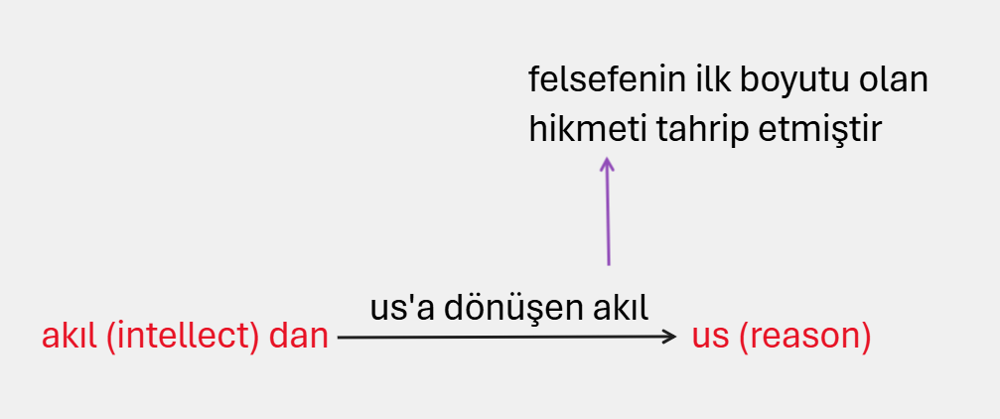
Bu mesele, en başından beri cevabını aradığımız, nereye bağlanacağımız sorunudur.
Ve bu sorun coğrafya, kültürel havza ve dile bağlı olmakla birlikte, onların hepsinin üstünde yer alır.
Diğer her şey gelenek oluşturma meselesinde yatay zemini oluştururken, dikeye açılan yollar inşa edilmedikçe gelenek denen şeyin asıl anlamı ihmal edilmiş olacaktır.
Batı düşünce ve sanatının ana akımının Rönesans sonrasında parçalayıcı, bağları çözücü, dikotomiler yaratıcı olduğunu söyleyebiliriz.
Bu parçalanmanın karşısında özellikle romantikler ve sonrasında Nietzsche ile başlayan başkaldırma da, gelenek-in bağlandığı yerin sorunlarıyla irtibatlıydı elbette.
Hume'yi övgüyle anan Kant, Hume'nin; Kant'ı yerden yere vuran Nietzsche Kant'ın; Heidegger Nietzsche'nin; Gadamer Heidegger'in vs. sorunlarından bir kısmını teslim alıyordu çünkü.
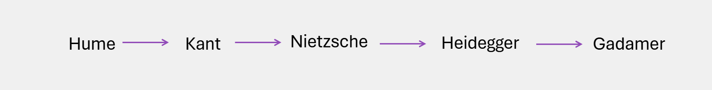
Modern parçalanmacılığın ve "parçalı kesinliğin" karşısına, daha bütüncül görünen ama aslında fluluğun ve agnostizmin birbirine karıştığı bir nihilizmin geçme şansı yüksekti elbette.
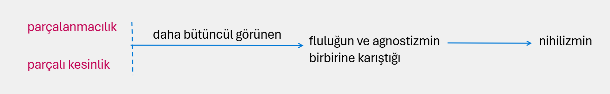
Günümüz Batı düşüncesinin gelenek-e her geri dönüşü, onu aynı yere çıkarmasa da benzer problemlerin farklı yüzlerde yeniden inşasına zemin hazırlıyor.
Önce "akıl" Akl'dan ayrılıyor ve bu kopuş, Aydınlanma'nın "kendi ayakları üzerinde duran ve başka hiçbir şeye ihtiyaç duymayan" insan modelinin tüm Batı düşüncesine -modern ya da anti-modern- hakim olduğu bir duruma eviriliyor.
Düşünmenin formları önce mikro boyutlara kadar küçültülüyor.
Sanat, bilim, felsefe, din ve onların binlerce farklı mini uzmanlık adacıkları...
Dinin bile Tanrı'yı kovmaya çalıştığı bu yeni bölünmüşlük içinde her alan kendi bağımsız adacığında hükümranlığını ilan ediyor.
Pratik akıl, saf akıldan ayrılıyor ve her ikisinin yargı gücünden bağımsızlaştığı garip bir akıl kakofonisi, bilmenin ve aklın sınırlarını "görmek istediklerinin temsil ettiği rasyonalizmin" sınırlarına çekiyor.
Ancak Külli akla bağlı olduğunda değerli olan akıl, bir mantık aracına indirgeniyor.
"Kendinde şey bilinemez" yargıları üzerinden, aklın, Aklile birlikte tüm gerçek metafizik ile bağları çözülüyor ve üstelik bu çözülme sahte bir metafizik ile birlikte rasyonel teolojiye de zemin hazırlıyor.
Sonra metafiziği ortadan kaldırmak için ortaya çıkan düşünürler, ortadan kaldırdıkları metafiziğin ardından öne sürebilecek bir hakikat bile bırakmıyorlar.
Ortalığın toz duman olduğu bu ortamda, hakiki metafizik ile birlikte, hakiki teoloji ve kutsal sanat da kayboluyor.
Hz. İbn Arabinin henüz ilk gençlik çağlarındayken İbn Rüşd ile buluştuğu söylenir.
İbn Rüşd, o sıralarda ünü ülkeleri aşan büyük bir filozoftur.
Ancak İbn Arabi'nin önünde, düşüncesinin geldiği yerin onayını bekler.
Gözlerinin içine bakar ve kendi geldiği yer konusunda fikrini sorar.
"Evet" der İbn Arabi. Büyük bir sevinç kaplar İbn Rüşd'ün içini. Coşmuştur. Kendisinin "felsefe" ile geldiği yerin teyidini bir hakimden almak istemiş ve onay almıştır.
Ancak İbn Arabi bir süre sonra "hayır" der. Bu defa İbn Rüşd'ün içini tarifsiz bir acı kaplamıştır. Hayatı büyük arayışlarla geçmiş ama demek ki geldiği yer "doğru" bir yer değildir. En sonunda İbn Arabi "evet ve hayır" der.
Batı düşüncesi içindeki bölünmelerin, parçalanmaların sorunlarını düzeltecek bir gelenek kurmak yönünde tavrımız "evet ve hayır" tavrı olacaksa şayet, bu, "her şey gider" tarzı bir agnostisizmden kaynaklanmayacaktır.
Yani "evet ve hayır" tavırlarında temel ayrımlar da mevcuttur.
Derrida'nın ya da Deleuze'nin "evet ve hayır" tavrı ile mesela İbn Arabinin, Sadreddin Konevlnin, Molla Sadra'nın, Mevlana'nın "evet ve hayır" tavırları arasında keskin farklar vardır.
Birinciler, çoğunlukla yatay düzlemde bir oluşu kutsarken, oluşun ardındaki "değişmeyen" şeyi görebilecek bir"göz"e sahip görünmezler.
Oluş ile varlık arasındaki savaşımda oluşun bitimsizliğine olan iman, onları "değerlerin değersizleştirdiği" ve "ilkelerin silikleşip yok olduğu" bir iklimin düşünürleri yaparken, İbn Arabi gibi bilgelerin "evet ve hayır" tavrı Asl'ın ilkesinin önemini vurgular.
ilke'nin önünde perdeler olduğu sürece bizlere oluşun bir oyunu gibi görünen şeyler, perdeler kalkınca yerini bir sükunete devreder.
Sükunetin varlığını reddeden bir tavır ile her şeyin üzerindeki Asl ilkesini kabul eden bir "evet ve hayır" tavrının aynı türden bir yaklaşım olamayacağı muhakkaktır.
Modern Batı düşüncesinin parçalanmayı kutsadığını ve ayrışmalar sonucunda birçok bilgi alanının birbiriyle ilişkisiz adacıklar olarak kendi hükümranlığını oluşturduklarını söylemek abartılı olmasa gerektir.
Sanat ve özelde sinema, bu ayrışmaların tüm sorunlarını bünyesinde barındırır.
Modern düşüncenin eleştirisini oluşturan ve bir kısmını yukarıda andığımız düşünürlerin problemleri, eleştirisini yaptıkları gelenekten, kimi problemleri çeşitli şekillerde devşirmeleridir.
Rasyonalizmin, pozitivizmin, duyumculuğun çeşitli türlerden, temeli sakat kesinlik iddialarına karşılık, bu felsefeleri eleştirenlerin kesinliği tümden reddeden bir nihilizme çıkma sebepleri bu yüzden tartışılmalıdır.
Ne oluyor da ifrat ile tefrit arasında sürüklenen düşünce ve sanat, bir türlü hakikate yönelik birşeyler söyleyemiyor?
Alpyağıl, bu döngünün felsefe eyleminin bizzat kendisi olduğunu söylüyor.
Ancak biz bu kanaatte değiliz.
Zira aklın, Akl ile bağını koparttığı bir felsefeyi anti-felsefe olarak adlandırmak daha doğru bir tavır olabilir.
Ve gelenek-in eklemlendiği yerin bu yeni konum alışa göre belirlenmesi daha doğru olabilir.
Nasr'ın Bilgi ve Kutsaldaki şu satırları konuyu detaylandırmamıza yardımcı olabilir.
" Tüm diyalektik düşünce sürecinin on dokuzuncu yüzyıldaki gelişimini karakterize eden şeyse, birçok geleneksel felsefedeki değişimin tersine, onun oluşum ya da süreçle ilgilenmesi değildir; gerçekliği geçici sürece, varlığı oluşa, mantığın değişmez kategorilerini (metafizikten söz etmeksizin) sürekli değişen düşünce süreçlerine indirgemesidir.
Gerçekliği geçici sürece
Varlığı oluşa
mantığın değişmez kategorileri sürekli değişen düşünce süreçlerine
indirgemesidir.
Modern Batı düşüncesinin ana çizgilerinde bulunan felsefe ekollerindeki bu süreklilik duygusu kaybı, Comte'un kaba pozitivizminin yanı sıra, yalnızca bilginin desakralizasyonuna(=kutsaldan uzaklaşma) değil, çağdaş olması gerekmese de modern diye bilinen insanı karakterize eden kutsallık duygusunun kaybına işaret eder.
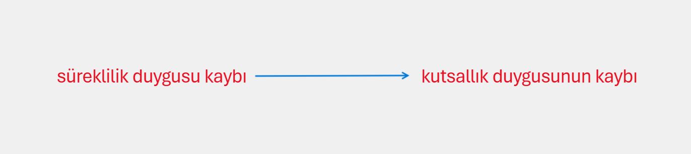
Bütün bunların arasından ister Hegelciliğe karşı çıkan irrasyonel felsefe formunda olsun ve isterse de pozitivizmin birçok sonraki formu ya da analitik felsefe formunda olsun, dini ve kutsallık arayışını mantıklı oluştan ve mantıktan tümüyle ayırarak ya da dili de, dille kuşkusuz ilgili olan düşünce süreçlerini de insanın bilgiyle ilgisi olduğu günlerden derinlerde gizli kalmış olabilecek herhangi bir metafizik anlamdan yoksun bırakarak bilginin kutsal mahiyetinin tamamıyla yok edilmesi programının son safhası uygulanır.
Sonuç, geleneksel bakış açısından yalnızca korkunç denebilecek olan ve Alman bilgin H. Türck'ün 'misophy'(hikmeti sevmek yerine, ondan nefret eden) diye isimlendirdiği ve diğerlerinin de 'anti-felsefe'diye mütalaa ettiği felsefelerin meydana getirilmiş olmasıdır." 2
ister felsefe veya düşüncenin diğer türlerinde, isterse de sanat veya sinemada olsun, "gelenek kurmak", her şeyden önce neden bir gelenek oluşturulamadığı sorusuna verilebilecek sahih cevaplarımızın olup olmadığı ile ilgilidir.
Kabaca "felsefi çokluk" olarak adlandırılabilecek bir "evet ve hayır" tavrının, iyi ya da kötü miras olarak kullandığı modern felsefe geleneği içinde olduğu gibi temel noktalarda ciddi eksikliklerinin olduğunu belirtmek, gelenek-in halatının tam olarak nereye atılacağı konusunda da bize öncü olabilecektir.
Son yüzyıldaki çeşitli türlerden modern felsefe eleştirisi felsefeler, parçalılıkta ve anti-felsefe olmaklık konusunda modern felsefenin mirasını çekinmeden devralırlar.
Seyyid Hüseyin Nasr, Bilgi ve Kutsal başlıklı çalışmasında yer alan, Batı düşüncesindeki bilgi ve bilginin desakralizasyonu meselesini ele aldığı makalesinde, Descartes'in, bilginin, hem mikrokozmik hem de makrokozmik yanıyla Külli akıldan koparılmış bir ferdi akıl fonksiyonuna indirgenmesinin, modern felsefenin ilk büyük kopuşunu yaşattığından bahseder.
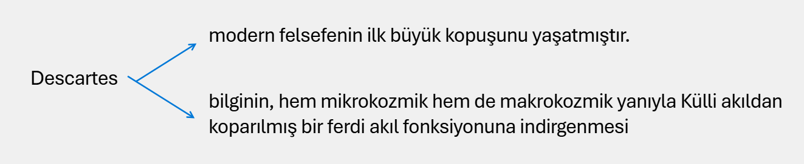
Cogito kavramında düşünen öznenin ferdi bilinci olarak öne sürülmesinin, bu ferdi bilincin hem epistemoloji hem de ontolojinin temeli olarak kutsanmasına yol açtığını ifade eder.
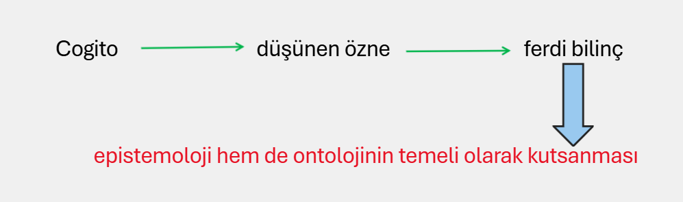
Yakin kaynağı Külli akıl değil öznel bilinç olmuştur artık.
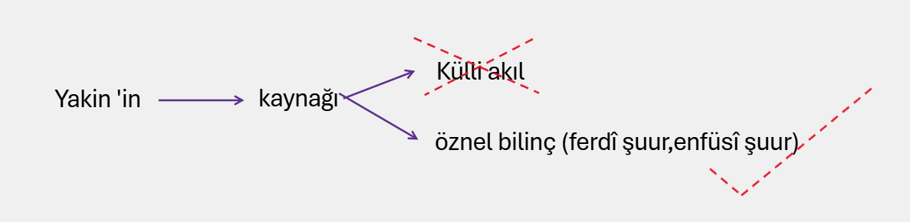
Ve bu, Batı felsefesinde temel ilginin ontolojiden epistemolojiye kayması anlamına gelir.
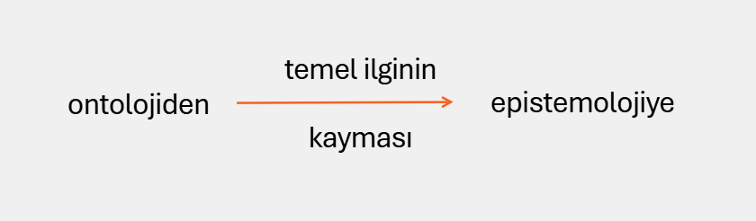
"Kişisel ben" hakikatin de, tüm bilgilerin de yegane kaynağı olur böylece.
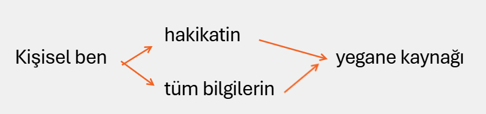
Descartes'den sonra gelen Batılı felsefecilerin, günümüz felsefesi içinde yer alan çoğu dahil olmak üzere, bilginin kutsaldan arındırılmış bir formuyla iş gördükleri söylenebilir.
Zira kartezyen kopma, aklı Akl'dan koparmakla kalmaz, doğanın, insanın ve bilginin kutsal mahiyetlerini de yok eder.
Mutlak Hakikat'in gizlendiği, ortadan kayboldu ğu bir süreçtir bu.
Tanrı'nın öldürülmesi bu sürecin bir sonucudur.
Ancak Tanrı'nın öldürülmesini haykırarak duyuran düşünürler de, kaybolan, öldürülenin yerine "oluş" denen uçuculuğu geçirerek epistemolojiden oynak bir yalancı-ontolojiye geçiş işlemini başlatmışlardır.
Bu gelişmeler Nasr'a göre varlığın hakikati ve Mutlak hakkında "kesin" bilgi elde etme imkanının yok olması sonucunu doğurmuştur.
Kutsallık kaybı, bilginin laikleştirilmesi, aklın Akl'dan kopup indirgenmesi ve parçalanma, "din içinden" bu felsefelere getirilen eleştirilerin de aynı sorunlardan muzdarip olmasını getirdi.
Mantığa indirgenmiş akla itiraz edeyim derken, mantığın kutsal karakterini ihmal eden türlü şekillerdeki gizemciliklere sapılması; aşkın ve hikmetin, bilgi ve akıldan koparılması; iman ile bilgi, aşk ile bilgi arasındaki bağların yok edilmesi.. .
Kutsalın akıldışına irca edilmesi, hikmet ile bilgi ve akıl arasındaki bağların çözülmesi anlamına gelir.
Mutlak'ın bilgisine erişmenin yollarından birisi olarak her halükarda Akl tarafından aydınlatılan akılla da ilişkisi olan aşk, duygulanımın düzeyinde akıldışına taşındı.
Mantık, rasyonalistlerin tekelinde kutsal karakterini yitirirken, Nasr'ın dediği gibi seküler mantık "akılsız olmanın en akıllı yolu olarak" öne çıktı.
Ontolojinin başat olduğu ve hikmetten bağımsız olamayacak felsefe/düşünce/sanat geleneği, epistemolojinin kelime oyunlarına indirgendi.
Rasyonel teolojiye indirgenmiş pozitif teolojinin karşısında Uzakdoğu ve İslam tasavvufu geleneklerinin yanlış yorumlarından kaynaklanan ve genellikle bir tür nihilizm/hiççilik olarak yorumlanabilecek negatif teoloji getirildi.
Bütün bu düşünceler ifratın karşısına tefrit olarak kurulmakta gecikmediler.
Tevhid geleneği olan/olması gereken dini düşünce içinden getirilen felsefe biçimleri/ eleştirileri, benzer bir parçalanmayı görünür kılıyordu.
Gelenek kurmak meselesindeki "otantiklik"sorusuna gelelim.
Nedir otantiklik?
Heidegger'e göre "otantiklik, zaten varaolan ve kendisine dönülen bir yerdeğil, kapalılığı-açma kararlılığıyoluyla başkaları ile keşfedebileceğimiz bir kendiliktir.
… otantiklik, zaten varaolan ve kendisine dönülen bir yerdeğil, kapalılığı-açma kararlılığıyoluyla başkaları ile keşfedebileceğimiz bir kendiliktir.
Heidegger dilinde otantiklik bir şekilde fanilik tasavvuru ile ve giderek ölümle ilintilidir.
Sınırla ilgili olan bu kavram otantikliği anlamada son derece önemlidir.
Zira kendilik denilen şeyin başkalarının sınırıyla olan alakası hatırlanmaya değerdir.
Kendi sınırını bilen, sınırlılığını bilen zorunlu olarak başkayı da düşünecektir.
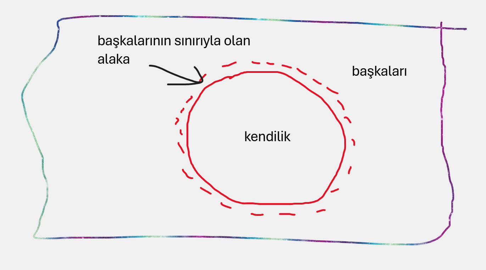
Haddi zatında başkanın olmadığı yerde kendi de yoktur. . .
Buna göre, otantiklik olma nosyonu bizden, esasen içe bakış, kendi üzerine düşünme veya tefekkürle başanılacak bir görev olan içimizdeki gerçek benle temasa geçmemizi ister.
Ancak ve ancak içtenlikle kendi keşfimizi yapar ve hakiki ben bilgisine ulaşırsak otantik varoluş yeterliliğimizin farkına varmaya başlanz.
İkincisi, bu ideal özde ne isek, gerçekte öyle olmamızı ister."3
Alıntı yaptığımız bölümdeki otantiklik tanımı, bir "kendilik" keşfi olarak insanın "kendi" ile Mutlak arasındaki ilişkiyi keşfetme deneyimi olarak alınırsa şayet, bizim gelenek kurmak meselemiz için bir çıkış noktası olabilir.
Zira Descartes'den bu yana modern ve post-modern felsefedeki problemlerinin ana sebeplerinden birisi, "kendilik" kavramının Descartes'in cogito ile açıkladığı düzlemin dışına (en azından dikey dışına) çok fazla taşamıyor olmasıydı.
Kendilik dikey düzlemde aranması gereken bir otantiklikti.
Tarihi ya da coğrafi düzlemin de üzerinde, insanın kadim bağları ile açıklanabilecek bir otantiklik...
Sanırım özellikle çağdaş Batı felsefesinin bir arızası olarak (ve çoğunlukla bir indirgeme olarak kullanılan) "özcülük", uzak durulması gereken bir tutum olarak görüldüğü için, Hakikat ya da kendilik bilgisi, ya da otantiklik, adına ne dersek diyelim, havada uçuşan ve asla elde edilemeyecek olan (Kant'ın 'aklın tarihine' kötü bir şakası mı?) bir şey haline dönüştürülüyor.
Evet, Alpyağıl'ın dediği gibi tarih ve coğrafya açısından bakılırsa otantiklik kendisine "dönülecek" ve "orada olan bir şey" değildir.
Ama gelenek kurmak olarak değerlendirebileceğimiz kök arayışı orada olan bir şeyden çok, "oraya olan bağı" inşa etmek demektir.
Ve bu, tarih ve coğrafyadan çok başka bir şeydir.
Tarih ve coğrafya ve onların şekillendirdiği kültürel fauna, bu konunun daha alt katmanlarda kalan bir boyutudur sadece.
Heidegger'in sözünü ettiği hakiki benbilgisi, Varlık ile Batı düşüncesi içinde kurulamayan bağın kurulması olarak değerlendirildiğinde anlamlıdır.
Yoksa oluşun sarhoşluğu içinde salınıp duran ve duracak biryer bulamayan insanın, tarihe coğrafyaya ve oradan gelebilecek tüm mirasa aynı değeri vererek yönelmesi değildir.
Evet, otantiklik, "orada biryerde hemen bulunabilecek bir şey" olmayabilir; ama orada bir yerde vardır.
Arayıp bulunabilecek bir şeydir.
Aklın da, aşkın da, hikmetin de, sanatın da yönelimi, ancak Külli akla taşar da herşeyi bir Mutlak bilgisi olarak "birlerse" değerlidir.
Dini olan ile felsefe ve sanatla ilgili olanın birbirinden ayrıl(a)madığı bir gelenekten, dini olanla sanat ve felsefe ile ilgili olan arasına net çizgiler koyabildiğimiz bir düşünceye, bugün din ile sanat ve felsefenin gerilimini çözdüğünü düşündüğümüz modern/post-modern düşüncenin yollarını takip ederek geldiğimiz çok açıktır.
Halbuki "gelenek", Nasr'ın dediği gibi "kutsalla bağını koparmış ve anlamını yitirmiş çağımız insanının çöküşünün ağıtına, beşeri varoluşunun Evvel'i ve Ahir'i olan Kutsal'ın bir cevabı değil midir?'4
Kuşatıcı bir bakışla hem Batılı hem de Doğulu düşünürleri anlam potamıza katıp değerlendirmeye evet, ama "kendilik" bakışımızı önceleyerek...
Yoksa yollar arasında bir tür trafik polisliği yapmak, bizi gelenek kurmak meselesindeyaya bırakır.
Sadreddin Şirazi'nin insanlık tarihinin başından beri var olduğunu söylediği halidî hikmet ile gerçek ilmi özdeşleştirmesi bize gelenek hakkında çok şeyler söyleyebilir.
Zira Kuran'ı Kerim'in de kadim bir hakikat anlayışıyla vahyin evrenselliğini öne sürdüğü bir vakıadır.
Bizim, kadim olan ve aklın asıl görevinin onu bulmak olduğu Hakikat anlayışımız yerine, sürekli uçuculuktan malul olan bir anlayışı getirmemiz gelenek kurmak meselesinde bir fayda sağlar mı?
"Eğer gelenek etimolojik ve kavramsal olarak nakletmeyle ilgiliyse, karşılık olarak religion (din) kökü itibariyle 'bağlayıcı' olmaya işaret eder. . . İnsanı Allah'a bağlar''5
Geçmiş ve gelecek arasında kurulması gereken bir köprü olarak gelenek, bugün düşünmenin tüm biçimlerini Kutsal'ın zemininde yeniden birleştirmek zorundadır.
Tasavvuf, ayırmaya, bölmeye, parçalılığa karşı tevhid anlayışını ortaya koyması hasebiyle imdadımıza yetişecektir.
Tasavvufi bir bakışla düşünürsek, gelenek kurmak, bizim coğrafya, tarih ve kültürümüzdeki düşünme yollarını yeniden ele almamızla mümkündür.
Şairlerin hakim, filozof ve din alimi olduğu bir gelenektir bu.
Şiirle, hikmetin peşinde koşabilen, aşkla yoğrulmuş, sanat eserlerinin hepsinin aktığı bir menzili olan bir gelenektir aradığımız.
Gelenek meselesinin salt bir epistemoloji sorunu olarak görülüp, tarihsel ve coğrafi bir düzleme indirgenmesi ana sorunumuzdur.
Zemin üzerine düşünmenin Kutsal'dan bağımsız kurulamayacağını vurgulamak diğer tüm vurgulardan daha önemlidir.
Zira İslam düşünce geleneği hiçbir veçhesiyle (en 'laik'inden kelam ve tefsire kadar en 'dini' olanlarına kadar) eşyanın niteliği ile ilgili hakikatin keşfiyle insanın arınmasının, aşkın ve yükselmenin ontolojik mahiyeti arasındaki ilgiyi ihmal etmemiştir.
Tasavvuf, Sanat ve Sinema
İnsanın ne olduğu, neyi kaybettiği ve kaybettiği şeyleri nasıl arayacağı sorularına aradığımız cevaplardan sonra, tasavvufun sanat ve özelde sinemaya nasıl bir katkısı olabilir sorusu üzerine düşünebiliriz.
Yine neyi kaybettiğimiz sorusu, tasavvuf zemininde dünya sanatının en güzel örneklerini vermiş İslam sanatının, çağımızda yapacağımız sanat eserlerine ne katabileceği sorusuna cevap verebilmemiz için temel çıkış noktamız olacaktır.
İnsan, Vahdet ile kesret arasındaki çift yönlü ilişkiyi ve Vahdet'te kesret, kesrette Vahdet'i görmeyi kaybetmiştir.
Vahdet'te kesret
Kesrette Vahdet
Özellikle Rönesans sonrası Batı sanatı, bu kaybın en "dünyevi" çabalarını gözümüzün önü ne getirir.
İnsan, artık tümüyle dünyevi bir varlıktır ve bu varlık profan olanın peşinde gidecek ve sanat da bataklığın fethi için araç olarak kullanılacaktır.
Ana akım sanatın altında başka akımlar da olacak, ancak onlar da gittikçe "bağımsız güzellik projesinin" hakikati Yani hakikaten ve doğruluk değerinden bağımsız spekülatif çabaları olarak anlamlandırılacaktır.
Estetik bağımsızlaşacak ve etikten de ontolojiden de bunların hepsinin ana zeminini oluşturan vahiyden de uzaklaşacaktı.
Gittikçe natüralistleşen, varlığın çift yönlü karakterini anlamaktan aciz olan bu bakış, artık maddi dünyanın tasvirine soyunacak ve gittikçe tasvir ile işgali birbirine karıştıracaktı.
Allah-insan-kainat ilişkisinde, insanın kainat ile Allah arasındaki berzahlık özelliğini anlamayı çoktan unutmuştu insanlık. Dolayısıyla tasavvufun tekrar gün yüzüne çıkaracağı ilk şey bu ilişkiyi hatırlatmak olacaktır. Bu ilişki bütün parçalanmış olanların Vahdet penceresi içinde birleştirilmesi gereğini de ortaya koyacaktır. Ahlakın eylemden, eylemin vahiyden, estetiğin diğer her şeyden, aklın kaynağından koparıldığı ve her alanın kendi yarı-tanrılığını ilan ettiği bu neo-paganizmin panzehiri olarak tasavvuf, vahyi insanlığın göbeğine yerleştirecektir yine. Allah ile insan arasındaki dinamik ilişkiyi yeniden inşa edecek ve dünyadan, insandan uzak bir "ritüel tanrısı" yerine, "bize şahdamarı mızdan yakın" Allah inancımızı, tüm düşünce, eylem ve inançlarımızın merkezine taşıyacaktır
Yorumlar